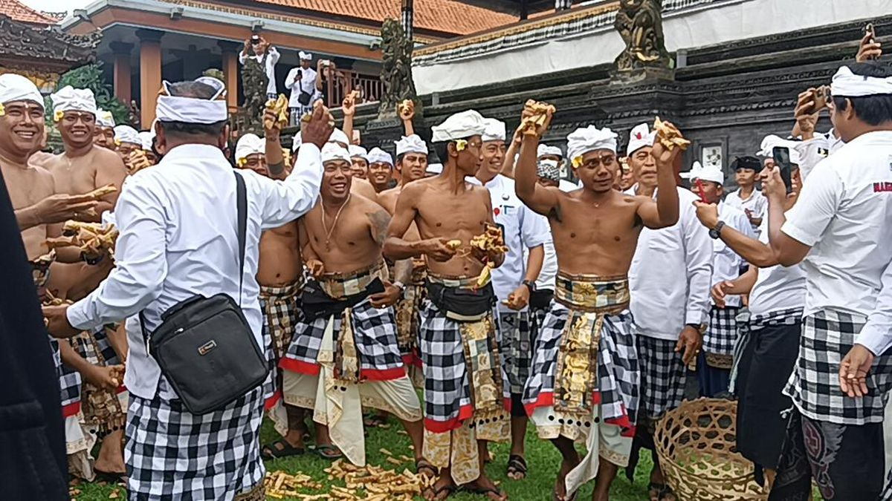
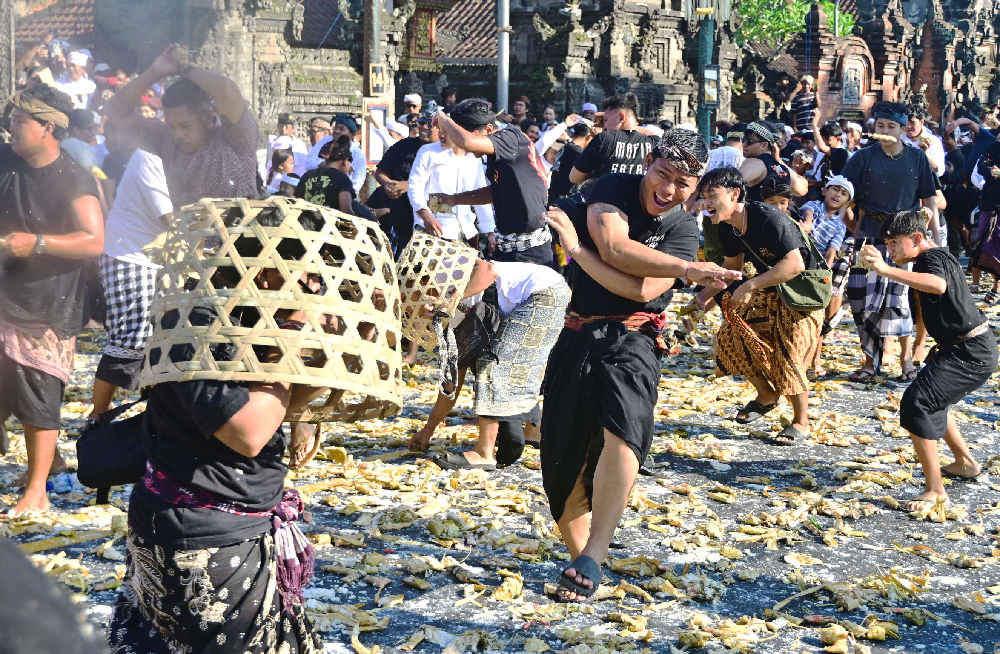
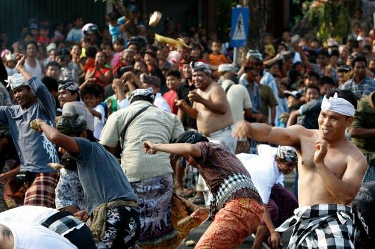
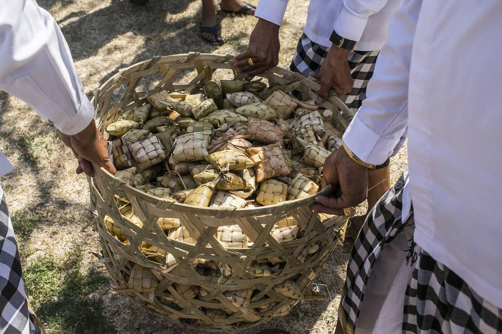

Tradisi Siat Tipat merupakan salah satu warisan budaya masyarakat Desa Adat Kapal yang telah diwariskan secara turun-temurun selama lebih dari enam abad. Tradisi ini menjadi simbol rasa syukur, permohonan kesuburan, serta keharmonisan hubungan antara manusia, alam, dan Tuhan.
Jelajahi Tradisi
Siat Tipat merupakan tradisi perang ketupat dan bantal yang dilaksanakan oleh masyarakat Desa Kapal setiap Purnama Kapat. Tradisi ini dipercaya sebagai simbol doa untuk kesuburan tanah, hasil panen yang melimpah, dan keseimbangan kehidupan.
Tradisi Siat Tipat dipercaya telah ada sejak masa Patih Kebo Iwa pada sekitar tahun 1339 Masehi. Tradisi ini lahir sebagai bentuk permohonan kesuburan tanah dan kesejahteraan masyarakat Desa Kapal yang saat itu mengalami masa paceklik.
Pura Puru Sada menjadi pusat pelaksanaan upacara Siat Tipat. Sebelum tradisi dimulai, masyarakat terlebih dahulu melakukan persembahyangan bersama sebagai bentuk penghormatan dan permohonan kepada Ida Sang Hyang Widhi Wasa.
Hingga saat ini Tradisi Siat Tipat masih dilestarikan oleh masyarakat Desa Adat Kapal. Selain menjadi bagian dari ritual keagamaan, tradisi ini juga menjadi daya tarik budaya yang memperkenalkan kearifan lokal Bali kepada wisatawan.
Tradisi ini merupakan simbol harapan agar tanah tetap subur, hasil panen semakin melimpah, serta kehidupan masyarakat selalu diberikan kemakmuran dan keberkahan.
Seluruh masyarakat bergotong royong mulai dari persiapan hingga pelaksanaan tradisi. Nilai kebersamaan ini mempererat hubungan sosial, persaudaraan, dan rasa saling menghormati.
Purusa melambangkan unsur laki-laki sebagai simbol kekuatan, tanggung jawab, dan energi yang berperan menjaga keseimbangan dalam kehidupan masyarakat.
Pradana melambangkan unsur perempuan yang menjadi simbol kehidupan, kesuburan, kelembutan, dan keharmonisan yang melengkapi unsur Purusa.
Tradisi Siat Tipat telah diwariskan selama lebih dari enam abad dan tetap dilestarikan oleh masyarakat Desa Kapal sebagai bagian dari warisan budaya Bali.
Tradisi ini hanya dilaksanakan di Desa Adat Kapal, Kecamatan Mengwi, Kabupaten Badung, Bali, dan menjadi identitas budaya masyarakat setempat.
Siat Tipat selalu dilaksanakan setiap Purnama Kapat menurut Kalender Bali sebagai ungkapan syukur serta permohonan kesuburan dan kesejahteraan.
Masyarakat menyiapkan Tipat dan Bantal.
Doa bersama di Pura Puru Sada.
Saling melempar Tipat dan Bantal.
Doa dan simbol rasa syukur.
Tahun Tradisi
Desa Pelestari
Nilai Filosofis


